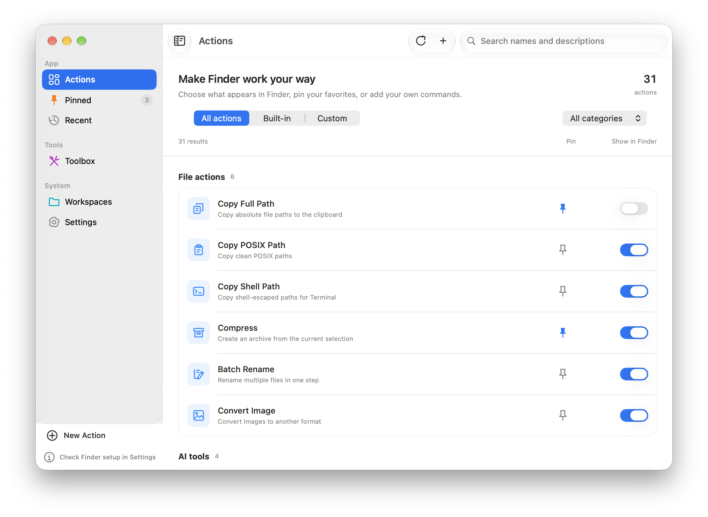
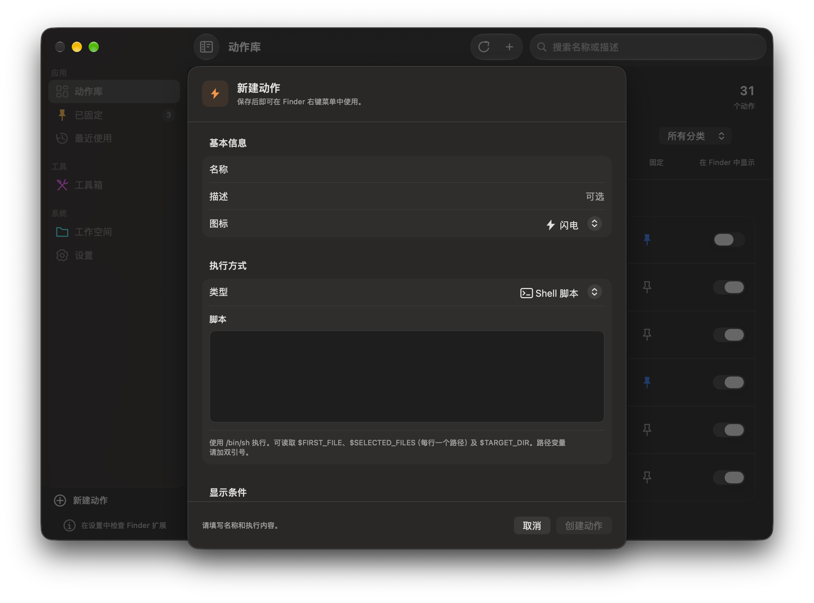

A better right-click
for your Mac.
Rename, compress, create files and convert images from your macOS Finder context menu. Make it yours with custom actions and a step-by-step setup guide.

Intelligence, built-in.
Extract text and remove image backgrounds locally with Apple Vision. Connect an optional OpenAI-compatible provider for suggested filenames and tags.
- Native LLM Providers: Configure an OpenAI-compatible endpoint, including OpenAI, Zhipu, Moonshot or local Ollama.
- Local On-Device AI: Extract text (OCR) or remove image backgrounds offline using Apple Vision.
- Contextual Smart Actions: Suggest filenames and tags from file text, image metadata and recognized text using your configured provider.

Everything you need.
SwiftUI, AppKit and Finder Sync, with practical tools for everyday files.
Batch Rename
Rename multiple files instantly. Add a prefix or suffix and optional numbering. Preview names and check conflicts before applying changes.
One-Click Packing
Compress selected files and folders to ZIP, with progress feedback and unique output names that preserve existing files.
Image Conversion
Export PNG, JPEG, TIFF and HEIC images beside their originals, with progress and partial-failure feedback.
Instant File Creation
Generate precise code templates (Markdown, Swift, TypeScript, JSON, HTML) and Office documents intuitively without opening terminal.
Quick Terminal Jump
A true lifesaver for developers. Open Apple Terminal in the selected directory, or copy a full, POSIX or shell-escaped path.
Custom Action Builder
Create and edit Shell, AppleScript or application actions. Choose an icon and file filters, then control menu visibility.
Install, enable, verify.
Super RClick is a native SwiftUI and AppKit app with a Finder Sync extension. The build targets macOS 15+ and includes Apple Silicon and Intel binaries.
- Download the 0.3.0 preview DMG, open it, and drag SuperRClick.app into Applications.
- Launch the app and follow the setup guide. Use Open Extension Settings to enable Super RClick under System Settings → General → Login Items & Extensions → Finder.
- Right-click inside a writable folder in your home directory. Create a TXT file from the Super RClick menu, then confirm the result in the guide.
- Customize action visibility in the action library. Create or edit a Shell, AppleScript or application action when you need your own command.
0.3.0-beta.1 · Community preview · October 24, 2026
This preview includes native action editing, original icons, safer file outputs, compatibility fixes and a setup verification step. It is ad-hoc signed and not Apple notarized. Gatekeeper may block downloaded apps; only use the per-app Open Anyway option if you trust the source.
Built and tested on macOS 27 / Apple Silicon. macOS 15 and Intel runtime checks, real Finder-menu integration and the desktop gesture still need broader device validation. Read validation details and known limits.
Questions before your first right-click.
Why is the Finder menu missing?
Install the app in Applications, open it once, and enable its Finder extension using the setup guide. This version monitors your home folder and its subfolders. External drives and unrelated system directories are not covered by that setting.
Does it work on the desktop background?
The optional desktop feature uses Option + right-click while the app is running. It requires separate Accessibility and Input Monitoring permissions. Normal Finder menus do not require those two grants.
Can I customize the right-click menu?
Show or hide built-in actions, pin favorites, and create or edit custom Shell scripts, AppleScript commands or application launchers. Custom actions can restrict file extensions and selection counts. Arbitrary menu ordering and a configurable global monitoring scope are not included in this preview.
Are OCR and background removal private?
Local OCR and background removal use Apple Vision on your Mac. Optional remote AI naming and tagging use the provider you configure and may send file text or recognized text to that provider. Provider fees may apply.
Is Super RClick free? Is it on the Mac App Store?
The source is available under the MIT license and GitHub downloads are free. This is a GitHub preview release; it has not been submitted to the Mac App Store.
Which image formats and rename modes are supported?
Image export supports PNG, JPEG, TIFF and HEIC. Batch rename supports a prefix or suffix with optional numbering and a conflict preview. Regex replacement and WebP export are not implemented.